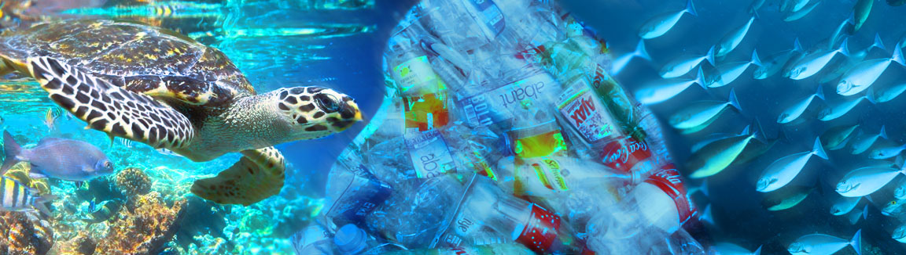

O impacto na vida marinha
Sabemos que grande parte do lixo do dia a dia termina dentro dos mares, e que grande parte desses detritos são feitos de plástico. O problema desse material específico é sua influência nas criaturas que estão em todo o momento lutando pela sua sobrevivência, e o plástico por ter um grande tempo de decomposição se torna um dos maiores inimigos desses animais, que além de ficar por muito tempo no meio aquático ainda é confundido como alimento por muitas espécies, esse fenômeno é visto frequentemente com as tartarugas-marinhas (no qual, seu grupo, constituído por seis gêneros e sete espécies, estão todas em extinção).
Um fato curioso do plástico é que, nos tempos atuais, ele já é capaz de ser encontrado nas profundezas marinhas, como por exemplo, no Abismo Challenger, situado a a 10 mil metros de profundidade. Somado isso ao fato de que em 2018, já era estimado que o oceano abrigava mais de 150 milhões de tonelada de resíduos plásticos, podemos perceber o real impacto de um recurso não renovável dentro de um cenário, que inconscientemente e indubitavelmente se tornou vítima do ser humano. Os danos causados, embora feitos por nós mesmos, não afetam somente os seres que ali vivem. Segundo a União Europeia (UE) os danos e perdas para o setor da pesca em 2018 atingiram a cifra de 61,7 bilhões de euros (cerca de 410 bilhões de reais). Além disso, a limpeza das costas e praias da Europa tem um custo anual que se situa entre 194 e 630 milhões de euros.
Proteger o oceano não é somente conservar os seres que ali vivem. É proteger a economia de países que dependem da pesca e é também respeitar aquilo que não temos controle. Uma das apostas para mudar esse cenário é adotar a fundação aposta em um modelo circular, em que os itens produzidos sejam reutilizados, ao invés da cultura de desperdício que temos como padrão, ou por exemplo, a criação de plásticos biodegradáveis justamente para reduzir o dano. Se somarmos isso com a consciência individual e social, tudo indica que podemos reverter parte do que já foi causado.